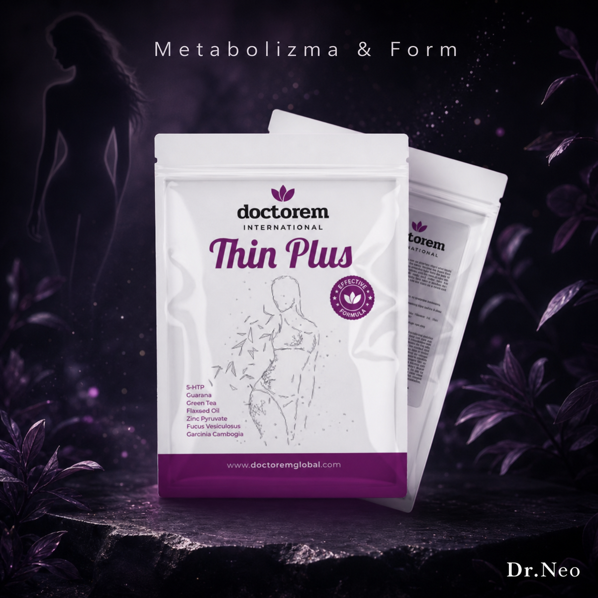

İdeal forma ulaşmak artık daha kolay, daha doğal ve daha dengeli!
Brezilya'ya özgü bir bitki olup tohumlarında yüksek miktarda kafein bulunur. Enerji artırıcı ve zihinsel uyanıklık sağlama özellikleri ile bilinir. Metabolizmayı hızlandırarak yağ yakımını destekler.
Güçlü antioksidan etkileri ile cilt sağlığını iyileştirir, metabolizmayı hızlandırır ve yağ yakımını destekler.
Vücutta enerji dengesi sağlayan bir hormondur. Beyne yağ depoları hakkında bilgi göndererek açlık hissini düzenler ve metabolizmayı hızlandırır.
Yeşil çayda bulunan güçlü bir antioksidandır. Metabolizmayı hızlandırır, yağ yakımını teşvik eder ve kalp sağlığını iyileştirir.
Enerji veren bir bileşiktir. Zihinsel uyanıklığı artırır, yorgunluğu azaltır ve metabolizmayı hızlandırarak yağ yakımını destekler.
Acı biberde bulunan ve metabolizmayı hızlandırarak yağ yakımını artıran bir bileşiktir. Ayrıca ağrı kesici özelliklere sahiptir.
Yağların enerjiye dönüşümüne destek olur, performansı artırır.
Deniz kenarlarında yetişen bir bitkidir. Antioksidan özelliklere sahip olup cilt sağlığını iyileştirir ve vücudu nemlendirir.
Japon meyvesi Sophora japonica'dan elde edilen bir bileşiktir. Antioksidan ve anti-inflamatuar özelliklere sahiptir, metabolizmayı hızlandırarak yağ kaybını destekler.
Sindirim sağlığını iyileştiren bir lif kaynağıdır. Bağırsak hareketlerini düzenler, toksinlerin atılmasına yardımcı olur ve kilo kontrolünü destekler.
Yağ yakımını destekleyen ve iştahı kontrol altına alarak kilo kaybına yardımcı olan bir bitkidir. İçeriğindeki HCA (Hidroksisitrik Asit), yağ üretimini engeller.